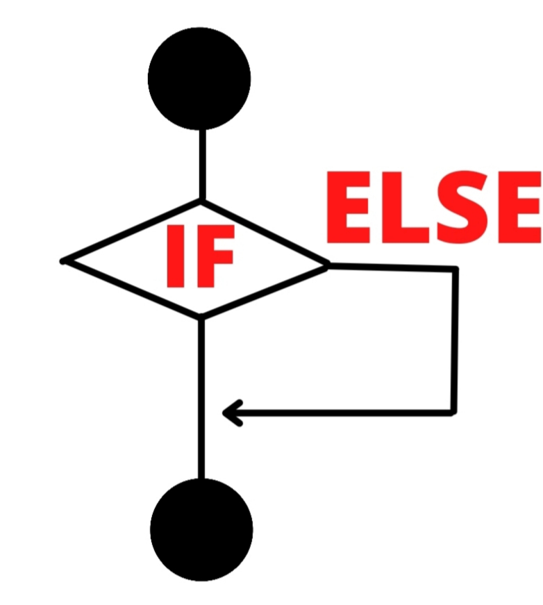
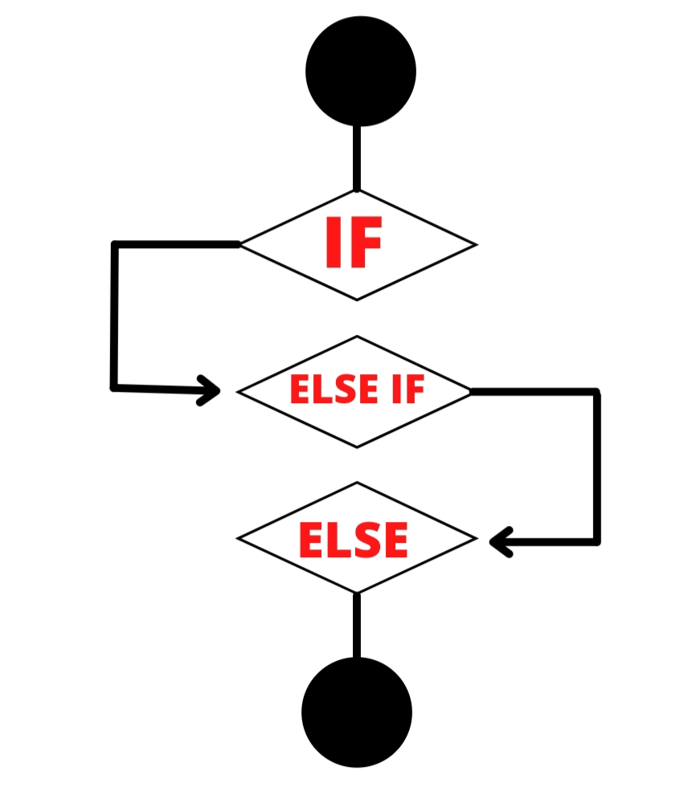

Janelas
alert
O elemento "Alert" é uma caixa de de diálogo que mostra uma mensagem na tela do usuário.
window.alert('Olá , mundo !')
confirm
O elemento "Confirm" é bem parecido com o Alert , mas ele funciona de forma diferente , pois o usuário pode escolher entre duas opções : CONFIRMA ou CANCELA . Além disso , o programador ainda pode armazenar a escolha do usuário em uma variável .
window.confirm('Escolha entre : Confirmar ou Cancelar .')
O usuário pode armazenar o valor do Confirm da seguinte maneira :
var escolha = window.confirm('Escolha entre : Confirmar ou Cancelar .')
window.alert(escolha)
Dependendo da escolha do usuário , a variável escolha pode assumir os valores lógicos true ou false .
prompt
Já o elemento "Prompt" é capaz de receber do usuário uma String . Veja o exemplo abaixo :
window.prompt('Digite seu nome : ')
Assim como o Confirm , o Prompt também pode der armazenado em uma variável . Veja o exemplo abaixo :
var nome = window.prompt('Digite seu nome : ')
window.alert(nome)
Proposições
O que são :
Proposições são sentença declarativa , ou seja , podem ser afirmações ou negações . Isto significa que podem assumir dois valores : true (1) ou false (0) .
Exemplo 1 : O alface é verde .
O exemplo 1 é uma proposição válida , pois o tomate é verde . A proposição assume valor true .
Exemplo 2 : Hoje está chuvendo .
A exemplo 2 também é uma proposição válida e pode assumir true ou false , dependendo do clima da sua cidade (chuva ou não) .
Exemplo 3 : A feijoada não é um prato típico brasileiro .
O exemplo 3 também é uma proposição válida , pois a feijoada é um prato típico do Brasil . A proposição assume valor false .
Exemplo 4 : O passaro voa .
O exemplo 4 também é um exemplo válido , pois passaros normamente voam . Note que a proposição pode assumir true ou false , pois existem passaros que não voam .
Exemplo 5 : Que horas são ?
O exemplo 5 não é uma proposição válida , pois a sentença não é uma afirmação ou negação , mas sim uma interrogação .
Lógica proposicional :
A lógica proposicional é basicamente a comparação entre valores lógicos , isto é , entre Proposições . Os elementos básicos da lógica proposicional são o And , OR e NOT . Segue a explicação de cada um abaixo :
OR
A porta lógica OR faz a comparação entre dois valores e retornará valor true quando ao menos um desses valores for true . Veja a tabela abixo para mais esclarecimentos .
valor 1
valo2
comparação
1
1
1
1
0
1
0
1
1
0
0
0
AND
A porta AND faz a comparação entre dois valores e retornará true somente quanto os dois valores comparados forem iguais à true , é basicamente o inverso da porta OR . Tente comparar as tabelas das portas AND e OR
valor 1
valo2
comparação
1
1
1
1
0
0
0
1
0
0
0
0
NOT
Já a porta NOT não faz uma comparação , mas sim uma inversão , isto é , se o valor for true , ele será convertido para false e vice-versa . Veja a tabela abaixo para maior prendizagem .
Estruturas Condicionais
O que são :
Estruturas condicionais , como o if , else e else if são estruturas de controle que determinam se determinados eventos podem e vão ocorrer . De forma mais clara , se uma dada condição for satisfeita , um bloco de código poderá ocorrer . Veja exemplos práticos do dia a dia :
Irei comprar pão , se eu estiver com dinheiro .
Coloque ração para o cachorro se não haver ração na tigela .
Se o pneu do carro furou , paro e troco, senão podemos seguir viagem .
Como você pode ver , estruturas condicionais estão bastante presente em nossa vida e , no geral , são bem fáceis .
If
A tecla if é , basicamente uma estrutura de controle , pois ela determina se um dado evento vai ocorrer .
Exemplo : Se o sinal está verde , atravesse a avenida . Senão , pare e aguarde .

Note que na imagem acima a estrutura if poderia checar se o sinal está verde e , consequentemente a parada do carro. Já o
else
não seria necessário ser usado , pois o if que determinaria a parada do carro .
var corDoSinal = window.prompt('Qual a cor do sinal ?')
if (corDoSinal == 'vermelho'){
window.alert('Pare o carro !')
}
Else
O else complementa o if e é usado quando necessitamos que algo ocorra quando o if resulta em false . Veja o exemplo abaixo :
Se eu tiver dinheiro , compro uma pizza . Senão , fico com fome hoje à noite .
Note que caso eu tenha dinheiro , a estrutura if retornará true e poderei comprar a pizza . Caso eu não tenha dinheiro , não poderei comprar a pizza , e ficarei com fome .
var dinheiro = window.prompt('Tenho dinheiro sim ou não ?')
if (dinheiro == 'sim'){
window.alert('Compro a pizza !')
} else {
window.alert('Fico com fome !')
}
Else If
O else if é usado quando precisamos de mais de duas estruturas de controle . Veja o exemplo abaixo :
Exemplo : Se eu estiver com até R$25 , consigo comprar uma pizza . Se eu estiver com mais de R$25 , comprarei uma pizza e um refrigerante . Caso contrário , ficarei com fome .
Note que caso eu tenha menos de vinte reais , corresponde à estrutura if . Caso eu tenha mais de vinte e cinco reais , corresponde à estrutura eslse if e caso eu não tenha nada corresponde à estrutura else .

Observação : você pode usar quantos else if's achar necessário .
var dinheiro = window.prompt('Quanto dinheiro tenho em reais ?')
if (dinheiro < 20){
window.alert('Compro a pizza !')
} else if (dinheiro > 25) {
window.alert('Compro a pizza e o refrigerante !')
} else {
window.alert('Fico com fome !')
}
Switch
Como funciona :
O switch funciona como uma estrutura condicional , assim como o if , mas pode substituir o uso de grandes estruturas if ; elif ... else .
O switch recebe um parametro e faz uma sequência de estrutura similares às if .Veja o exemplo abaixo :
Note que no switch , os cases funcionam como if . Você deve usar break apos cada case para evitar que sejam execultados mais de um case .
Veja um exemplo de switch pelo código abaixo :
var numero = window.prompt('Digite um número de 0 a 4 : ')
switch( numero ) {
case 1:
window.alert('Quarto')
break
case 2:
window.alert('Segundo')
break
case 3:
window.alert('Terceiro')
break
case 4:
window.alert('Quarto')
break
default :
window.alert('Eu disse um número entre 0 e 4 !')